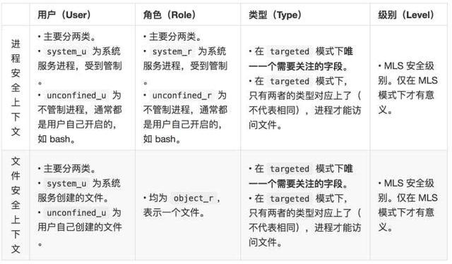
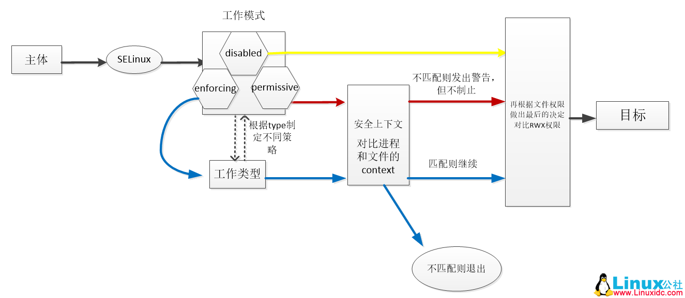
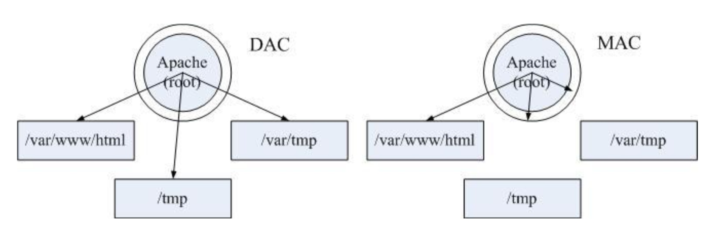

SELinux简介
- selinux主要由美国国家安全局开发，针对计算机基础结构安全开发的一个Linux安全策略。SELinux可以允许系统管理员更加灵活的来定义安全策略。
- SELinux是一个内核级别的安全机制，对于其配置文件的修改都是需要重新启动操作系统才能生效的
SELinux基本概念
SELinux 主要作用就是最大限度地减小系统中服务进程可访问的资源（最小权限原则）。
操作系统的安全机制其实就是对两样东西做出限制：进程和系统资源（文件、网络套接字、系统调用等）
SElinux 当中针对这两样东西定义两个基本概念：域（domin）和上下文（context）
域就是用来对进程进行限制，而上下文就是对系统资源进行限制
- 进程的SElinux信息，查看当前进程的域的信息
1
2
3
4
5[root@localhost ~]# ps -Z
LABEL PID TTY TIME CMD
unconfined_u:unconfined_r:unconfined_t:s0-s0:c0.c1023 4723 pts/2 00:00:00 bash
unconfined_u:unconfined_r:unconfined_t:s0-s0:c0.c1023 4883 pts/2 00:00:00 ps
[root@localhost ~]#- 查看文件的SELinux信息，文件上下文信息 ls -z
1
2
3
4
5
6[root@localhost ~]# ls -Z
-rw-------. root root system_u:object_r:admin_home_t:s0 anaconda-ks.cfg
drwxr-xr-x. root root unconfined_u:object_r:admin_home_t:s0 redis
drwxrwxr-x. root root unconfined_u:object_r:admin_home_t:s0 redis-2.8.17
-rw-r--r--. root root unconfined_u:object_r:admin_home_t:s0 redis-2.8.17.tar.gz
[root@localhost ~]# 注：
- unconfined_u：指的是SELinux用户，通过用户可以确认身份类型
- root表示root账户身份
- user_u表示普通用户无特权用户
- system_u表示系统进程
- 身份和不同的角色搭配时有权限不同，虽然可以使用su命令切换用户但对于SElinux的用户并没有发生改变，账户之间切换时此用户身份不变，在targeted策略环境下用户标识没有实质性作用
- object_r: object_r一般为文件目录的角色、system_r一般为进程的角色，在targeted策略环境中用户的角色一般为system_r。用户的角色类似用户组的概念，不同的角色具有不同的身份权限，一个用户可以具备多个角色，但是同一时间只能使用一个角色。
- admin_home: 文件和进程都有一个类型，SElinux依据类型的相关组合来限制存取权限。
SELinux的工作原理
SELinux下的基本的概念
主体 SELinux管理的主体为进程
目标 SELinux通过管理进程，来限制进程访问的目标，值文件
工作模式 决定SELinux机制的启动与否
- enforcing ===>强制模式，SELinux已经启动
- permissive===>宽容模式，SELinux已经启动，但不会禁止，只是会提出警告信息
- disabled ===>关闭模式，关闭SELinux
工作类型 表示SELinux具体的安全性策略
- targeted===>默认类型为targeted,主要限制网络服务
- minimum ===>简化版的targetd，限制部分网络服务（centos7）
- mls ===>多级安全限制，较为严格
安全上下文
- 进程必须和文件的安全上下文对应（不是必须一样）才能对其进行访问
- ls -Z 文件名 # 查看文件的安全上下文
- ps -Z # 查看进程的安全上下文
- 
- 进程必须和文件的安全上下文对应（不是必须一样）才能对其进行访问
sestatus 查看SELinux的具体的工作状态
1
2
3
4
5
6
7
8
9
10
11[root@localhost ~]# sestatus
SELinux status: enabled #SELinux是否开启
SELinuxfs mount: /sys/fs/selinux #SELinux数据文件的挂载目录
SELinux root directory: /etc/selinux
Loaded policy name: targeted #当前的工作类型
Current mode: permissive #当前的工作模式
Mode from config file: enforcing #/etc/selinux/config中的工作模式
Policy MLS status: enabled
Policy deny_unknown status: allowed
Max kernel policy version: 31
[root@localhost ~]#
工作原理图
- 
查看当前SELinux的工作状态，可以使用 getenforce 命令来查看：
1
2
3[root@localhost ~]# getenforce
Permissive
[root@localhost ~]#修改SELinux的工作状态
临时修改：重启就失效
1
2
3
4[root@localhost ~]# setenforce 1
[root@localhost ~]# getenforce
Enforcing
[root@localhost ~]#
永久修改：修改主SELinux主配置文件
vim /etc/selinux/config
1
2
3
4
5
6
7
8
9
10
11
12
13
14
15
16
17
18
19
20
21# This file controls the state of SELinux on the system.
# SELINUX= can take one of these three values:
# enforcing - SELinux security policy is enforced. 强制执行selinux安全策略
# permissive - SELinux prints warnings instead of enforcing. 宽容模式（运行进程做事情，但是给与警告，并且会记录下来）
# disabled - No SELinux policy is loaded. 不加载安全策略--》selinux失效
SELINUX=enforcing
# SELINUXTYPE= can take one of three two values:
# targeted - Targeted processes are protected,
# minimum - Modification of targeted policy. Only selected processes are protected.
# mls - Multi Level Security protection.
SELINUXTYPE=targeted重启之后生效reboot
vim /etc/sysconfig/selinux
1
2
3[root@localhost ~]# ll /etc/sysconfig/selinux
lrwxrwxrwx. 1 root root 17 7月 4 18:35 /etc/sysconfig/selinux -> ../selinux/config
[root@localhost ~]#
权限管理机制
SELinux的主要作用就是最大限度地减少系统中服务进程可访问的资源（最小权限原则）。
但是，如果一个以root身份运行的网络服务存在Oday漏洞，黑客就可以利用这个漏洞，以root的身份在服务器上为所欲为，这就很可怕了。
DAC
——-自主访问控制
是一种软件机制,用于控制用户对文件和目录的访问。DAC允许所有者根据自己的判断来设置对文件和目录的保护
在没有使用 SELinux 的操作系统中，决定一个资源是否能被访问的因素是：某个资源是否拥有对应用户的权限（读、写、执行）。
而最致命问题是，root 用户不受任何管制，系统上任何资源都可以无限制地访问。
这种权限管理机制的主体是用户，也称为自主访问控制（DAC）
MAC
——-强制访问控制 ，是一种基于标签关系的、由系统强制执行的访问控制机制。
在使用了 SELinux 的操作系统中，决定一个资源是否能被访问的因素除了上述因素之外，还需要判断每一类进程是否拥有对某一类资源的访问权限。
这样一来，即使进程是以 root 身份运行的，也需要判断这个进程的类型以及允许访问的资源类型才能决定是否允许访问某个资源。进程的活动空间也可以被压缩到最小。
即使是以 root 身份运行的服务进程，一般也只能访问到它所需要的资源。即使程序出了漏洞，影响范围也只有在其允许访问的资源范围内。安全性大大增加。
这种权限管理机制的主体是进程，也称为强制访问控制（MAC）。
而 MAC 又细分为了两种方式，一种叫类别安全（MCS）模式，另一种叫多级安全（MLS）模式
其中说到
MAC，人们首先会想到的就是SELinux。SELinux就是一种基于域-类型模型（domain-type）的强制访问控制安全系统。
DAC和MAC的对比

- 可以看到，在 DAC 模式下，只要相应目录有相应用户的权限，就可以被访问。而在 MAC 模式下，还要受进程允许访问目录范围的限制。
实例
SELinux在httpd中的运用
首先我们来安装并且启动httpd服务，httpd也就是apache，很常见的web服务器。
1.安装
1
[root@localhost ~]# yum install httpd
2.开启httpd服务
1
2
3[root@localhost ~]# service httpd start
Redirecting to /bin/systemctl start httpd.service
[root@localhost ~]#
参考文章
做人做事，安全第一—-SELinux入门https://zhuanlan.zhihu.com/p/30483108
SELinux从入门到放弃https://saucer-man.com/operation_and_maintenance/84.html